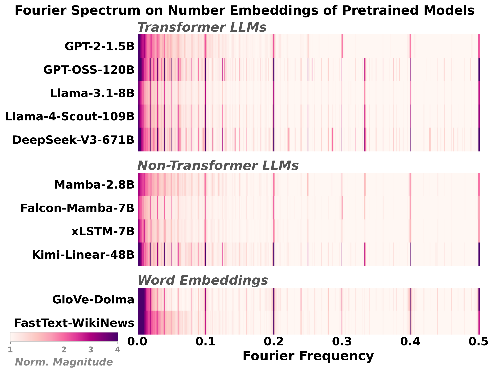
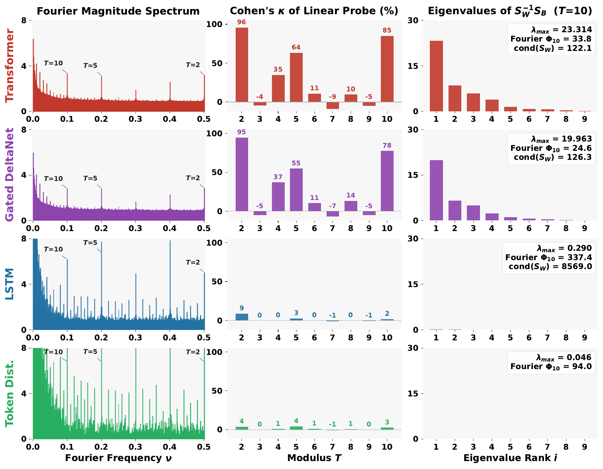
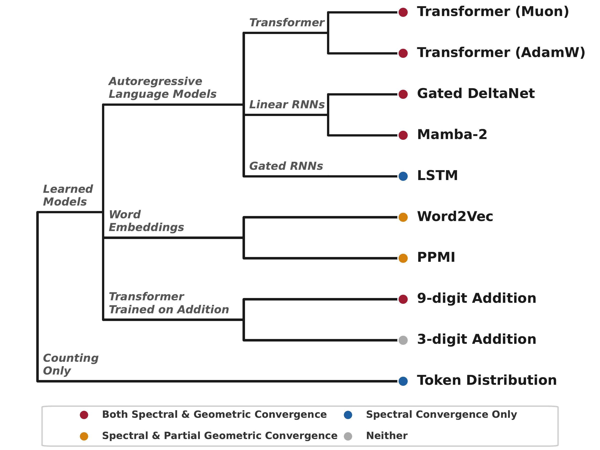
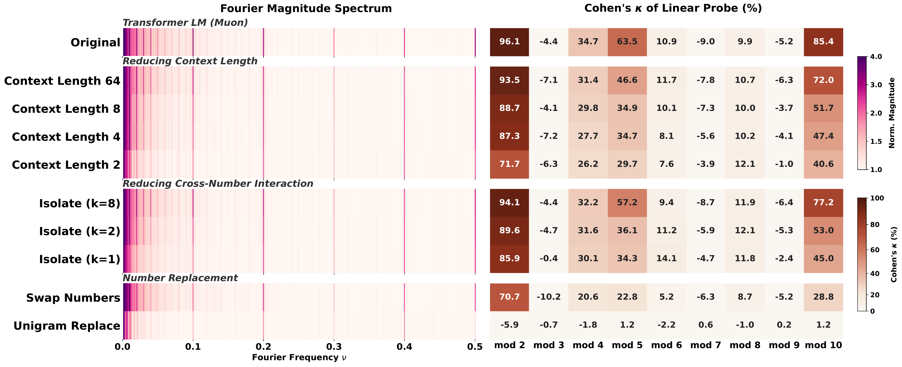
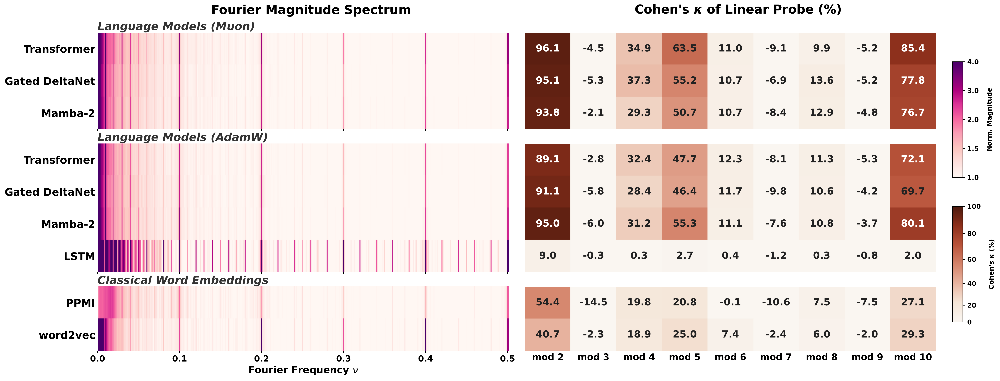
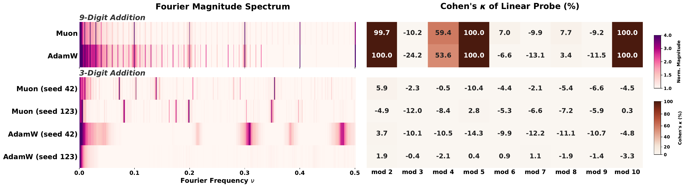

A two-tiered hierarchy of periodic features in language models, and why a visible Fourier spike does not mean a model has learned what numbers are.

Language models trained on natural text learn to represent numbers using periodic features with dominant periods at T = 2, 5, 10. In this paper, we identify a two-tiered hierarchy of these features: while Transformers, Linear RNNs, LSTMs, and classical word embeddings trained in different ways all learn features that have period-T spikes in the Fourier domain, only some learn geometrically separable features that can be used to linearly classify a number mod-T.
To explain this incongruity, we prove that Fourier-domain sparsity is necessary but not sufficient for mod-T geometric separability. Empirically, we investigate when model training yields geometrically separable features, finding that the data, architecture, optimizer, and tokenizer all play key roles. In particular, we identify two different routes through which models can acquire geometrically separable features: from complementary co-occurrence signals in general language data (including text–number co-occurrence and cross-number interaction), or from multi-token (but not single-token) addition problems.
Overall, our results highlight the phenomenon of convergent evolution in feature learning: a diverse range of models learn similar features from different training signals.
We separate two types of convergence that prior work has often conflated. One is easy to get; the other is hard-won.
Fourier spikes at T = 2, 5, 10. Every pretrained LLM we checked has them, and so does the raw number-token frequency distribution with no model at all. Spectral convergence reflects the statistics of the training data, not learned structure.
Residue classes n mod T are linearly separable in the embedding. This requires the data, architecture, and optimizer to align. Under our 300M-parameter, 10B-token setup, a Transformer reaches Cohen's κ = 96 at T = 2, while an LSTM trained on identical data sits at chance, even though its Fourier power is larger.

Even the raw number-token frequency histogram produces the same T = 2, 5, 10 spikes. A spike in a model tells you about the training data, not about understanding.
Linear mod-T separability is a much stronger property than Fourier sparsity. We prove (Theorem 1) that spikes are necessary but not sufficient.
Controlled perturbations of the training distribution attribute representations to specific structural properties of the data, giving a complementary lens to influence functions.
Geometric convergence arises either from complementary co-occurrence signals in general text, or from multi-token addition training where carries force modular subproblems.
With identical data and compute, Transformers and Gated DeltaNet learn geometrically separable features; LSTMs do not, even though they develop more prominent Fourier spikes.
9-digit (multi-token) addition forces a mod-1000 subproblem at each output position via carry propagation, producing circular representations. 3-digit (single-token) addition imposes no such constraint; outcomes depend on optimizer and seed.

In biology, convergent evolution describes unrelated organisms independently developing similar traits under shared environmental pressures. The eyes of vertebrates and cephalopods are the canonical example. Fourier features in number embeddings fit the same pattern: a shared trait that emerges across radically different systems because they share constraints from training data and tokenization.

Swap Numbers, Unigram Replace, Isolate-k, short context) leave Fourier spectra nearly identical, but mod-T probing degrades substantially. Unigram Replace falls to chance.

For the full walkthrough with intuition, theorem statement, and a worked counterexample, see the blog post.
@article{fu2026convergent,
title = {Convergent Evolution: How Different Language Models Learn Similar Number Representations},
author = {Fu, Deqing and Zhou, Tianyi and Belkin, Mikhail and Sharan, Vatsal and Jia, Robin},
journal = {arXiv preprint arXiv:XXXX.XXXXX},
year = {2026}
}